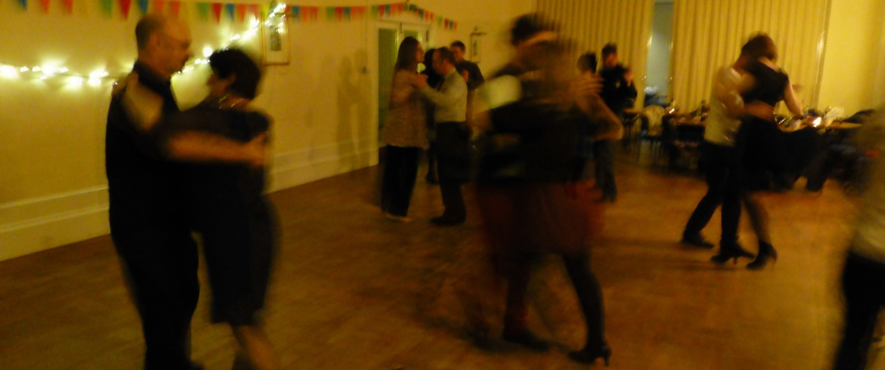

In our workshops for improvers, intermediate or advanced dancers, we focus on a theme or dance style of your choice.
Why invite us to teach a workshop:
- We specialise in Authentic Tango de Salon with close embrace - from improvers up to advanced.
- Never really mastered Tango Vals and Milonga? With us, you will!
- We are passionate about teaching tango!
- Our teaching style is varied and engaging, with solo and partner exercises on technique, embellishments and rhythmical patterns.
- We give each dancer individual attention.
- We use a structured approach to teach improvisation, leading & following, rhythm, floor navigation and new combinations.
- You can choose from a large portfolio of workshop themes - or we are happy to work with you to design a custom workshop.
Some themes we have previously taught:
Tango de Salon
- Taking turns: A new look at giros
- Spice up your tango: embellishments for leaders and followers
- From Di Sarli to Color Tango: musicality and rhythmical patterns
- Dancing on the tables: dancing in a small space
- Around the bend: walking turns
- It takes two to tango: focus on leading and following
- Improving your improvisation
- Ladies-only: technique and embellishments for followers
If you would like to discuss a custom program, please contact us. We also have a portfolio video which can be viewed upon request.
To discuss prices for workshops, please contact us.


 Workshops by invitation
Workshops by invitation Last verified: 11 January 2014
Last verified: 11 January 2014
 Workshops
Workshops